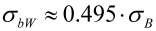
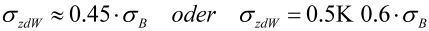
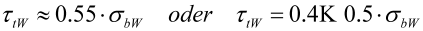
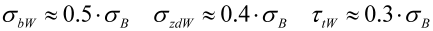
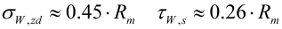

|
|
|


新材料疲劳极限
如果要向数据库添加新材料，必须输入其无限寿命强度，以及屈服点和拉伸强度。
Hänchen 给出

弯曲疲劳极限的近似值，以及来自不同来源的其他近似值。对于拉伸/压缩疲劳极限，其规定为

，而对于扭转疲劳极限，其规定为

.
根据 DIN 743，可以进行以下近似：

对于整体淬硬钢（其他材料类型可能有不同的值），FKM 指南提出：

Fatigue Limits for New Materials
If you want to add a new material to the database, you must enter its infinite life strengths, and also the yield point and tensile strength.
Hänchen gives
an approximation of the bending fatigue limit, and also other approximations from different sources. For the tension/compression fatigue limit, this states
, and for the torsion fatigue limit it states
.
According to DIN 743, the following approximations can be made:
For through hardened steels (there can be different values for other material types), the FKM Guideline proposes: